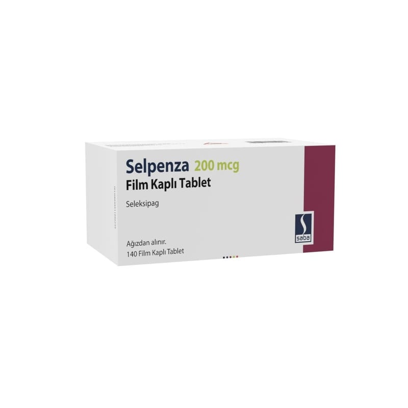

Selpenza 200 mcg Film Kaplı Tablet, 60 Adet

Ne için kullanılır
KT · Bölüm 1SELPENZA etkin madde olarak seleksipag içeren bir ilaçtır. “Prostasiklin” adı verilen doğal madde ile benzer şekilde kan damarlarına etki eder, kan damarlarını gevşetir ve genişletir.
SELPENZA yuvarlak, açık sarı renkli, bir tarafında “2” oymalı film kaplı tablettir.
SELPENZA, 60 tablet ya da 140 tablet içeren blister ambalajlarda bulunur.
SELPENZA, endotelin reseptör antagonistleri veya fosfodiesteraz tip 5 inhibitörleri olarak bilinen diğer pulmoner arteriyel hipertansiyon (PAH) ilaçları ile hastalığı yeterince kontrol edilemeyen erişkin hastalarda PAH’ın uzun süreli tedavisinde kullanılır. Hasta bu ilaçları kullanamayacaksa, SELPENZA tek başına da kullanılabilir.
PAH, kanı kalpten akciğerlere (pulmoner arterlere) taşıyan kan damarlarındaki kan basıncının yüksek olduğu bir hastalıktır. PAH hastası olan kişilerde bu arterler daralır ve kalp kanı bu damarlardan akciğerlere pompalamak için daha çok çalışmak zorunda kalır. Bu da kişinin kendisini yorgun hissetmesine, baş dönmesine, nefes darlığına ve diğer belirtileri yaşamasına sebep olabilir.
SELPENZA doğal madde olan prostasikline benzer etki göstererek pulmoner arterleri genişletir ve sertliklerini azaltır. Bu da kalbin kanı pulmoner arterlere pompalamasını kolaylaştırır. SELPENZA pulmoner arterlerdeki basıncı düşürür. PAH belirtilerini hafifletir ve PAH hastalığının ilerlemesini yavaşlatır.